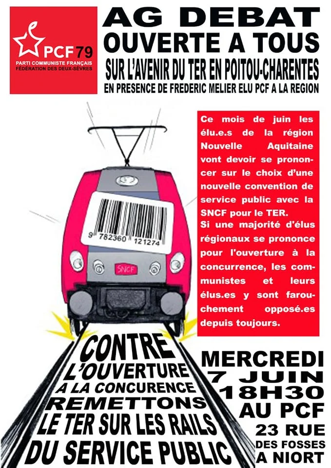

Annonce fédérale
À Niort, débat du 7 juin sur l’avenir des TER en Poitou-Charentes
Date indiquée par Facebook · 3 juin 2023
Repères éditoriaux
Nous avons ouvert la discussion sur l’avenir des TER le 7 juin à 18 h 30 au 23 rue des Fossés. La publication du 9 juin revient sur les échanges avec Frédéric Mellier.
Texte conservé avec la publication
L'avenir des TER en Poitou-Charentes. Réunion débat ouverte à tous :
MERCREDI 7 JUIN 18h30
FD PCF79 23 rue des fossés NIORT

Sources
Archive rouge · export Facebook · AR-0002-FB-01637
À lire aussi · À Niort, nous défendons les TER comme service public